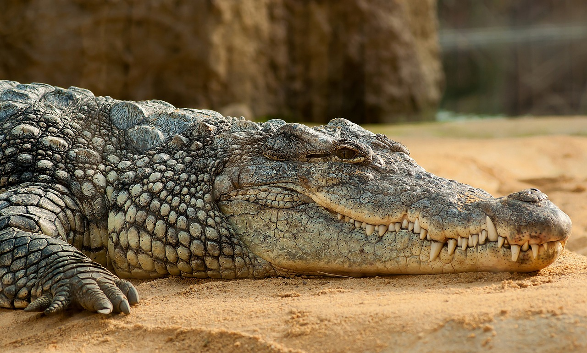

Ollie
Ollie is a Polar Bear who enjoys swimming in ice cold water.

Ollie is a Polar Bear who enjoys swimming in ice cold water.
Mona is a Kodiak Bear and her favorite food is fish caught from the river.

Frankie is rather nervous. He was abandoned in Africa when poachers took his family.

Coconut is a gentle Giraffe and enjoys eating from the trees.
Mella is the "queen" of the Serengeti.
Karl is a fierce hunter, but only to prey, not to his caretakers.
Cookie is a Chipanzee and is smarter than you'd think.
Earl is always getting into trouble!
Banana Pudding is an Orangutan and loves commuicating with her trainers.
Wren looks intimidating, but she's a big softy.
Aspen is actually a Crocodile, not an Alligator, even though they may look similar.
Mika is the one who must be fed from a distance!